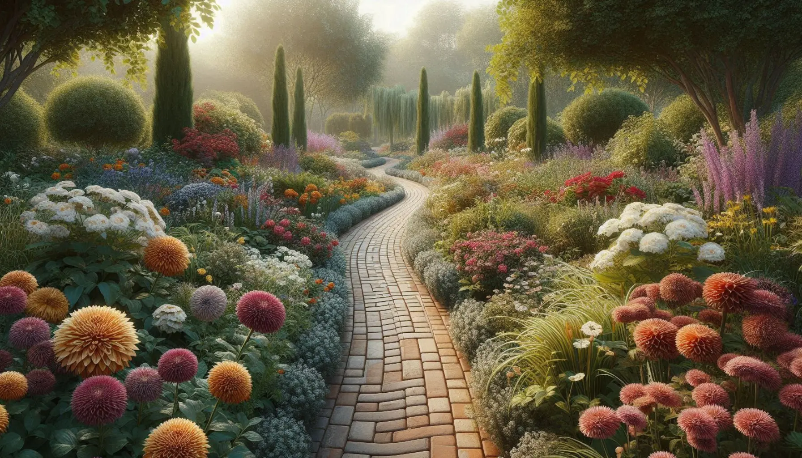
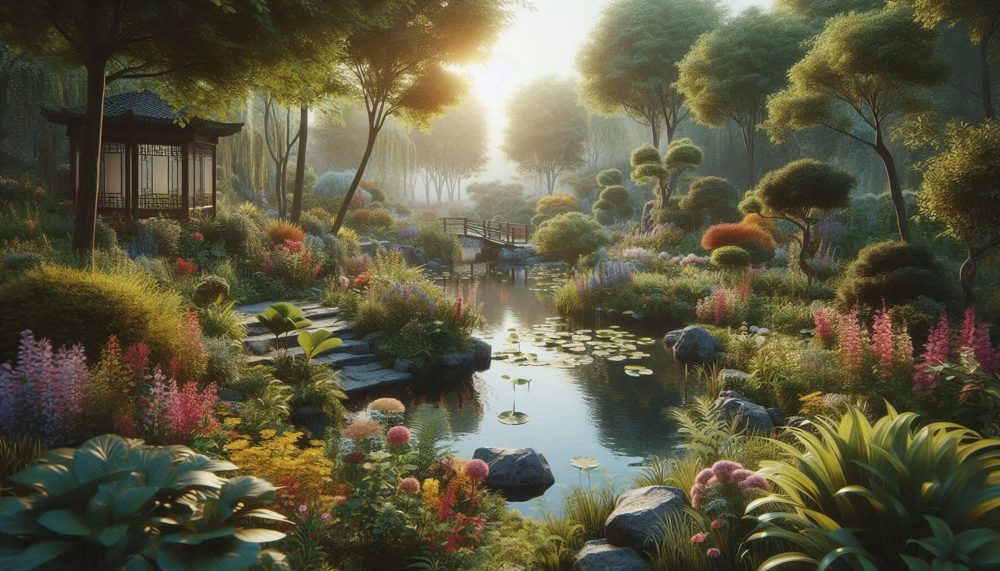
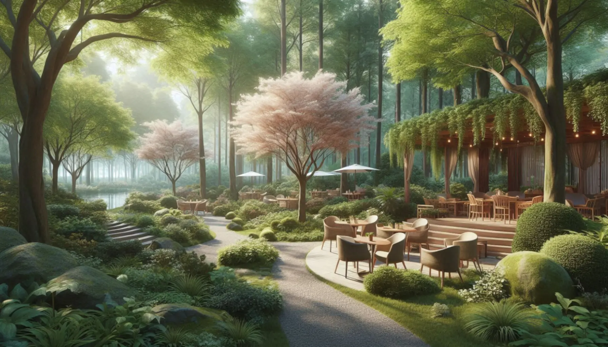
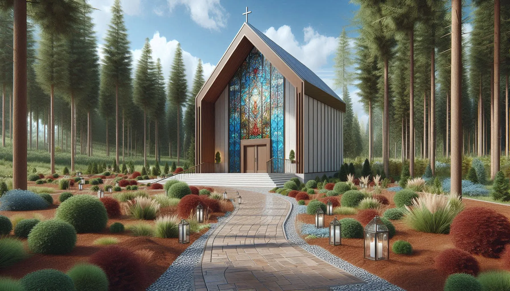

The Promenade
Stroll along this central brick pathway, lined with a wide variety of native and exotic flowers, shrubs, and trees, connecting you to each unique garden. The Promenade invites visitors to explore the beauty that lies within Local Gardens.
Zen Garden
Experience tranquility in our Japanese-themed Zen Garden, where a serene pond and a delicate Bonsai trail create a peaceful retreat. This garden is a perfect place to pause and find inner calm.
Sakura Cafe
Nestled near the Zen Garden, Sakura Cafe offers a charming outdoor setting to enjoy a refreshing drink or light bite. Take in the garden views while you relax and recharge.
Lewis-Moore Chapel
This modern chapel, featuring a stunning stained glass entrance, is the centerpiece of the Ceremonial Garden. It's an idyllic venue for weddings and special ceremonies, blending nature with elegance.
Concentric Garden

Discover the beauty of a home garden on a grand scale in the Concentric Garden. Circular levels within a small valley showcase a variety of annuals and perennials, creating a vibrant display of life.
Stillwater Meadow Vista
Journey to the farthest point of the garden to reach Stillwater Meadow Vista. This overlook offers a breathtaking view of a wildflower-filled meadow and a serene stream disappearing into the woods.